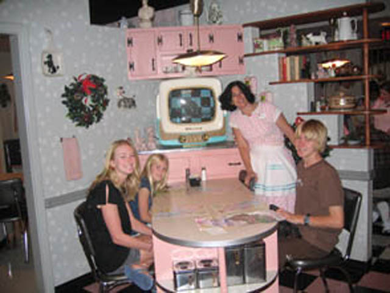
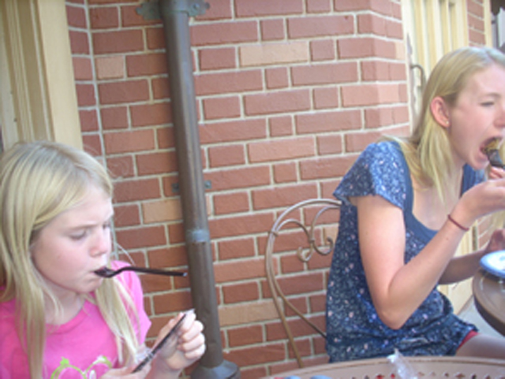
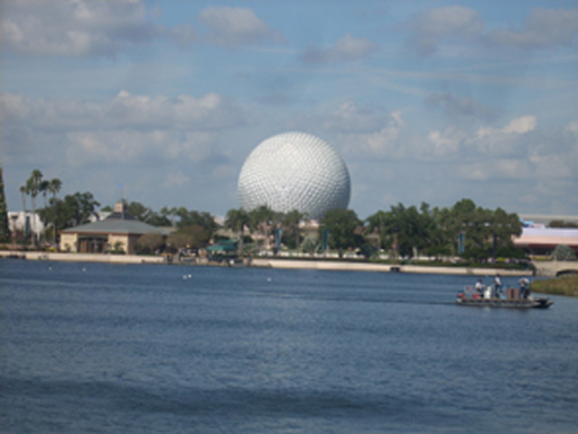

The Walt Disney World Resort is perhaps one of the most famous theme park resorts in the world and it's not hard to see why. This awesome resort consists of four theme parks, two water parks, and a whole bunch of other stuff while the Disneyland Resort in California is only made up of two parks. But Disneyland can't really expand due to all the houses that surround it. But oh well. There is literally a crapload of stuff to do at the Walt Disney World Resort. They've got all of the classic Mountain Rides everyone knows about and some other stuff that is only exclusive to them. And to make it an even better place, the versions of the rides they do have are of high quality. Most of their stuff is better than the Disneyland Resort. Their Tower of Terror is better than Guardians of the Galaxy for instance, and we'll go over more examples in the review (And there are a couple instances where the CA version is better). One thing that I hear people complain about at Disney World is that everything is too spread out and how you can't simply just walk to each park like in California. I actually enjoy the spread out layout of the Walt Disney World Resort. I like it because A: It makes it seem a lot more like an Isolated Magical Land than the Disneyland Resort where you can see Supreme Scream at Knotts Berry Farm from the lifthill of Goofy's Sky School. B: I enjoy the area between the two parks and it makes for a good walk (At least it does with Epcot and MGM Studios). And C: This means Disney World has room to expand. And each park in the Walt Disney World Resort provides a different experience and something good to offer. I totally recommend taking a vacation here at some point in your life (And don't forget to hit up the rest of Florida as well).
There is a link to a review of all the Rollercoasters at the Walt Disney World Resort.
Please keep in mind that there is no review of Seven Dwarves Mine Train, Slinky Dog Dash, or Guardians of the Galaxy: Cosmic Rewind because none of them exist when I last visited.
Here are the reviews of all the Flat Rides at the Walt Disney World Resort. First off, there's Tower of Terror, but the review is right up there, so we'll move on. Aside from Tower of Terror, The Walt Disney World Resort is doing poorly in the flat ride department. We'll go through the flat rides by each park. The Magic Kingdom barley has any flats at all! All Magic Kingdom has is Astro Orbiter, Dumbo, and the Mad Hatter Tea Party! And Astro Orbiter and Dumbo are practically the same thing. I never rode the Floridan Mad Tea Party. But I'm assuming it's the exact same as the California version, which sucks due to a lack of spinning. Epcot pretty much has no flat rides. Lame. =( Aside from Tower of Terror, Disney's Hollywood Studios has nothing. And the only flat ride they have in Animal Kingdom is the Triceratop Spin. And that's just like Dumbo. So it's nothing original. So yeah. The Disney World Resort, like most parks, has a sh*tty flat ride collection and nothing interesting. But hey. At Disney Parks, it's not about the flat rides.
Here are the reviews of all the Dark Rides at the Walt Disney World Resort. This is an area where the Walt Disney World Resort is doing a phenomenal job in (Because that's what Disney is known for). Well first off, they've got Test Track, which kicks major ass. But there's a review of it right up there so we won't go into any more details. But they still have a bunch of other awesome dark rides. First off, they've got Mission Space. Now they've got two versions of Mission Space. Spinning Version and Non Spinning Version. Well of course, we at Incrediblecoasters only rode the Spinning Version. Now on Mission Space, you guys are split up into roles, and during this simulator, you are going off on a mission to Mars. You blast off into space and pull a lot of Gs. You go into Hyperspleep for many months. Then you land on Mars. But then we have to go back to Earth before we can colonize any of the land, making our journey quite pointless, but also quite fun at the same time. Next up on our Dark Ride Agenda is Kilimanjaro Safari. This ride is basically a giant safari where you can see Lions and Tigers and Bears and Santa (Ok, you won't really see Tigers, Bears, or Santa. I just wanted to use a Ralph Wiggam quote). Now apparently, there's this story to the ride about how a poacher is poaching the animals. But nobody really pays attention to that as we don't need a stupid poacher. Just give us some damn animals. Or if you really wanted to make it more fun and Disneyfie it, why can't the poacher be McLeach from the Rescuers Down Under!? Yeah, I love that idea! Make the poacher McLeach (incredibly underrated Disney Villian from an incredibly underrated Disney Movie. More people need to see this movie)!! You're already on a connect every ride to a Disney Movie craze! Why not connect Kilimanjaro Safari to Rescuers Down Under (Oh yeah. They only care about the movies that sell merchandise. *Sigh* God damn it Disney)!!? Then we've got Dinosaur. Dinosaur is basically a clone of Indiana Jones except here, you go back in time and see some dinosaurs. All there is to say about it is Indiana Jones beats the living crap out of it. Over at the Magic Kingdom, they've got Micky's Philharmagic in 3D. Which is strangely about Donald. So basically, Donald gets Mickey's Wizard Hat, travels through a bunch of Disney Movies. Then Mickey gets his hat back. It's actually really cool. Then they've got Haunted Mansion and Pirates of Carribean. To break the tradition, the California versions are actually better. I know the Florida Haunted Mansion has extra rooms, but those rooms only contain those pictures and the stuff you see between the stretching room and the ride itself. Plus the California Stretching Room goes down while Florida's goes up. And California Pirate has 2 drops while Florida's has one. Plus the California one just has more stuff. Now Disney World had one dark ride that I hope NEVER makes it to California. Stitch's Great Escape. It didn't scare me, it didn't entertain me, and it turned me off Chilli Dogs for a long time. Thank god it's gone. And they've got a Nemo Dark Ride. While I may bag on California's Nemo, but at least you're in a submarine. Here, the only cool thing about this ride at all is the starfish who talks to you at the end of the ride. And they've got a bunch of other dark rides that I didn't ride. I missed out on Small World, Jungle Cruise, Buzz Lightyear, Pooh, Peter Pan, Star Tours, and Maharajah Jungle Trek. And since my last visit to Disney World, they added Toy Story Mania. Now I love the California Version, so I'm assuming the Florida one kicks ass as well. So as you can see, the Walt Disney World Resort has a fantastic dark ride collection.
"Look out for McLeach! He didn't make it all the way through 3rd grade for nothing!"
Water Rides
Here are the reviews of all the Water Rides at the Walt Disney World Resort. Now they've only got two water rides at the Walt Disney World Resort. But they are good water rides. Let's start with the better water ride. Splash Mountain! Unlike the California version, This Splash Mtn has side by side seating. After climbing the first lifthill, you float around like on a normal log flume. Then you have your first small drop. Then you go inside where you find all of the audio anamatronics. After seeing the robots enjoy themselves, you go down the second drop. This is my personal favorite of the three drops. Because after the drop, the boat rises back up before hitting the water. While there's not any airtime, it's still cool to rise up in the dark on the log flume. If you've never been on any of the Splash Mtns, this may be a suprise for you. By this point, all the audio anamatronics have gotten gloomier as they set the mood for the final drop. Then you climb up the final lifthill while the vultures laugh at you. The Final Drop is fun, and the robots are happy again afterwards. The other water ride they have at the Disney World Resrot is Kali River Rapids. You go up, see some trees, go through some rapids, and then down the final drop. Now I prefer Grizzly @ DCA to this as that has two drops, better rapids, and I never saw any of that "fire" that Kali River Rapids supposedly has. But it's still completely superior to the average river rapids ride. And Kali has one thing Grizzly doesn't. Water Cannons to soak random people with. And they're free!! =) Now I just need Yell at us Guy and Pink Sweater Girl to come to Disney World and ride it. Now THAT would make Kali better than Grizzly.
The entrance to Florida Splash Mtn.
Water Park
Yep. The Walt Disney World Resort has not only one, but TWO!!! TWO DIFFERENT WATER PARKS!!! And unfortunetly, I didn't visit either of them. Which is such a shame, because from what I've heard, both of them sound AWESOME!!! First off, there's Blizzard Beach. The entire water park is themed to ice, but apparently its really warm. They have one of the tallest water slides ever, Summit Plummet. And yeah. It sounds AWESOME!!! Over at their other water park, Typhon Lagoon, they have a wave pool. But not just any ordinary wave pool. These waves are 6 ft. high! Cool!! And they have another Master Blaster called Crush 'N' Gusher. Hey, I'm down for that. I totally have to check these out next time I visit the park!!
Dining
Here are the reviews of all the Resteraunts at the Walt Disney World Resort. First off, let's review one of the best resteraunt that Incrediblecoasters has had at a theme park (Though technically, it's in the Grand Floridian Hotel, we don't give a sh*t). Our favorite and fanciest meal at the Walt Disney World Resort was at Citricos in the Grand Floridian Hotel. It was really nice. The atmosphere was awesome, our chef treated us very well, My Veal and Mashed Potatoes were amazing, and Allie and I split some peice of chocolate that was shaped like DNA or something spiraly like that. Another great resteraunt we at was Prime Time Cafe at MGM Studios. It's a 50s themed resteraunt where we had to act out as a traditonal 50s Family sitting down for dinner and I had to be the gentleman since I was the only boy. Now instead of a regular menu, they give you one of those picture things and they use that as the menu. So that's pretty clever. I ordered some meatloaf or something like that. We were then told to clear our plate and I think we even had to do some clean up. It was really well themed and totally seemed like a stereotypical 50s Family Dinner. Now Epcot has a lot of pavilions for each country. Well most of these countries have a resteraunt to go along with it. We at Incrediblecoasters ate at the Mexico and France Pavilions. The Mexico Pavilion had some really good Mexican Food. Some of the best I have had. The only problem I had with it is that it took so long to get our table. But oh well. The place kicks major ass. At the France Pavilion, I got some sort of sandwich. I forgot what exactly it was, but it probably had meat in it, so I made PETA angry (PETA never likes my food choices). But what really made the France Pavilion stand out is that they had some kickass chocolate crepes which, as already stated, kick ass. Next, we'll be reviewing the Rainforest Cafe. This is a typical Rainforest Cafe. Expect to wait a LONG time for your food. However, you can entertain yourself in the gift shop or even hang out in Animal Kingdom. And the food will be good when you get it. Up next on our Resteraunt Itenerary is the Flame Tree BBQ. This is a nice little BBQ place in Animal Kingdom. The Ribs I got were good, it was well themed, and I even got a few shots of Expedition Everest from the eating area. Up next, we'll be reviewing the Pinnochio Village Haus. I was not too fond of this resteraunt as it was too crowded and took too long to get our food. Our next resteraunt to review is Beache's and Cream at the Beach Club Resort. I know I wasn't feeling my best when I ate here, so I never ate too much of the food. But I do remember that you could order something called the Kitchen Sink. When you order it, lights and sirens go off, and then they literally bring you a sundae in a kitchen sink and you have to eat it. Just looking at it made me want to throw up (Not because it looked disgusting, but because I was feeling like crap and just imagining trying to eat it make me feel like puking). They've also got a buffet at the Beach Club Resort. They suprisingly had really good food at the buffet. Too bad it's so damn expensive. And then if you just want something to drink, you can go to Club Cool. Here's a quick review of each country's soda. Chinese Watermelon Soda and the Mexican Apple Soda kicked ass (Mexican Apple Soda is called Manzanita Sol, which is becoming more common in So-Cal. That makes me happy), Costa Rican Cherry Fanta is awesome, Isreali Lemon Soda tastes like Sprite, Mozambique Ginger Ale tastes like ordinary Ginger Ale, While I've heard of people complaining about Germany's Mezzo Mix, I actually liked it (Actually avaliable in Germany). Japanese Veggi Soda, this one isn't really soda, it's more like V8, except not nearly as good. And Italy's Beverly, lets just say that this stuff is infamous for a reason. Its really nasty sh*t. And there's a whole lot more food for us to try at the Walt Disney World Resort. But as you can see, they've got great dining at the Disney World Resort.

Don't we make a lovely stereotypical 50s Family?

Here are the chocolate crepes we got at the French Pavilion.
Don't think Beverly is that bad? See the video and watch our reactions for yourselves.
Theming and Other Attractions
Here are the reviews of all the other stuff at the Walt Disney World Resort. The theming everywhere is great. Nowhere in the resort is there a dull amount of theming. And they've got a sh*tload of stuff to do at the Walt Disney World Resort that isn't classified in the other categories. First off, we've got Epcot. And aside from that section with the rides, yes. I mean all of Epcot. You can go and see various countries in the world as you go through the pavilions. And you can totally have a lot of fun goofing off all around the world. And another thing Disney is known for are it's shows. And it's shows KICK ASS!!! Lights Moters Action is currently the best Incrediblecoasters Show of all time. Everything about it is really awesome. It's got chasing cars, backwards cars, people on fire, people falling, more fire, and explosions. This is without a doubt, the best Incrediblecoasters Show Ever. And guess what else, their inferior shows beat the crap out of 99% of other theme park's best shows. They've got a Nemo Musical which is really cool. You can clearly see the actors, but it's still awesome. They've got some sort of Interactive Show with Timon, Pummba and other Disney Characters. I could've seen the Beauty and the Beast Show, but I decided to get stuck in the Cold Chamber instead. They've also Illuminations which is the Best Fireworks Show Ever!!! I also remember seeing some parade with fireworks, though I forget what it was all about. And then they've got an awesome pool at the Beach Club Resort. The pools have sand at the bottom, they have a lazy river, and they've also got the best hotel water slide I've ever been on. It beats the crap out of both of the water slides at my local pool. And this is all just scraping the surface of stuff that you can do at the Walt Disney World Resort.
Disneyworld's Castle.

Here's the whole symbol of Epcot.
BEST SHOW EVER!!!!
BEST FIREWORKS EVER!!!!
Currently the best hotel water slide ever.
In Conclusion
The Walt Disney World Resort is a great place to take a vacation. You've got four awesome amusement parks, two water parks that look great, a bunch of hotels, quality shows, great dark rides, some nice roller coasters, great food and a bunch of stuff to do. There's never a shortage of stuff to do. I know some people spend a week here and don't get sick of it. So yeah. You'll have a great time.
Enthusiast FAQs.
*Are there kiddy coaster restrictions? - No. Barnstormer doesn't have any restrictions (I still need that credit).
Tips
*They have an airport shuttle that'll take you to and from the airport to the resort.
*The Walt Disney World Resort offers free fastpasses. USE THEM!!!
*Spend multiple days here.
*If you want to get to a real quality resteraunt, get reservations in advance.